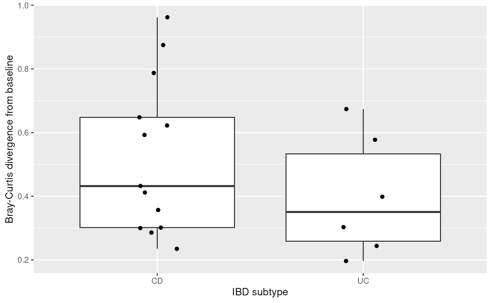
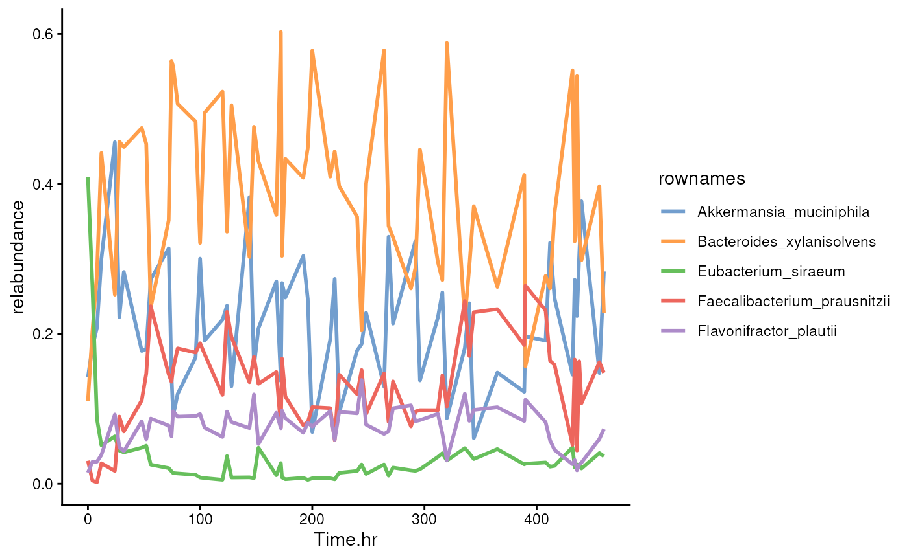

miaTime is a package in the mia family,
providing tools for time series manipulation using the TreeSummarizedExperiment
data container.
miaTime is hosted on Bioconductor, and can be installed
using via BiocManager.
BiocManager::install("miaTime")Divergence refers to the quantification of dissimilarity or difference between microbiome samples taken at different time points. This concept is crucial for tracking how microbial communities change or evolve over time, either in individuals or experimental conditions.
miaTime provides several functions for calculating
divergences:
Baseline divergence: Measures the dissimilarity between each sample and a reference (typically the first time point) within a group (such as per subject).
Stepwise (rolling) divergence: Assesses the change between consecutive (or defined interval) time points by comparing each sample to the previous ith sample in the series.
The divergence is typically calculated using a beta diversity metric, such as Bray-Curtis dissimilarity, which quantifies how different two communities are in terms of their composition.
For rolling or stepwise divergences, the calculation measures how much the community shifts from one sampling point to the next.
Quantifying divergence allows researchers to:
Track temporal instability or stability of the microbiome.
Compare change rates between individuals or treatments.
Identify significant shifts or stable periods in the microbiome composition.
For example, in a human gut microbiome time series, calculating divergence helps determine how resistant the microbial ecosystem is to perturbations (such as antibiotics or diet changes) and how long it takes to return (if at all) to its original state.
Divergences can be calculated with *Divergence()
functions. In the example below, we use a subset of the HMP2
inflammatory bowel disease cohort, where each subject was sampled before
and after treatment. For each subject, we compare the follow-up sample
to the first sample.
data(HMP_2019_ibdmdb)
tse <- HMP_2019_ibdmdb
tse <- addBaselineDivergence(
tse,
time.col = "days_from_first_collection",
group = "subject_id",
assay.type = "relabundance",
method = "bray")The results are stored in colData. Divergence is zero
for the baseline samples, so we compare the follow-up samples between
IBD subtypes.
library(ggplot2)
df <- as.data.frame(colData(tse))
df <- df[df[["time_diff"]] > 0, ]
ggplot(df, aes(x = disease_subtype, y = divergence)) +
geom_boxplot(outlier.shape = NA) +
geom_jitter(width = 0.1) +
labs(x = "IBD subtype", y = "Bray-Curtis divergence from baseline")
Stepwise divergence compares each sample to the previous sample of
the same subject. In hitchip1006, some subjects have up to
five samples.
data(hitchip1006)
tse <- hitchip1006
tse <- transformAssay(tse, method = "relabundance")
res <- getStepwiseDivergence(
tse,
time.col = "time",
group = "subject",
assay.type = "relabundance",
method = "bray")
res[!is.na(res[["divergence"]]), ] |> head()
#> DataFrame with 6 rows and 3 columns
#> divergence time_diff ref_samples
#> <numeric> <numeric> <character>
#> Sample-1007 0.324761 24.0 Sample-875
#> Sample-1008 0.256115 36.0 Sample-876
#> Sample-1009 0.223923 12.0 Sample-878
#> Sample-1011 0.330024 24.0 Sample-1009
#> Sample-1012 0.000000 0.2 Sample-831
#> Sample-1014 0.148906 0.5 Sample-1012The time_diff column shows how much time separates each
sample from the one it is compared to. The intervals vary between
subjects, which is worth keeping in mind when comparing divergences.
Short term change measures how the abundance of each feature changes
between consecutive time points. getShortTermChange()
returns the absolute change, growth rate and rate of change for each
feature (Ji et al. 2020). Below, we use minimalgut, a time
series of a synthetic gut community in bioreactors.
data(minimalgut)
tse <- minimalgut
tse <- transformAssay(tse, method = "relabundance")
df <- getShortTermChange(
tse,
assay.type = "relabundance",
time.col = "Time.hr",
group = "StudyIdentifier")
df |> head()
#> DataFrame with 6 rows and 7 columns
#> StudyIdentifier FeatureID Time.hr time_diff abundance_diff
#> <character> <factor> <numeric> <numeric> <numeric>
#> 1 Bioreactor A Agathobacter_rectalis 0 NA NA
#> 2 Bioreactor A Agathobacter_rectalis 4 4 0.01631756
#> 3 Bioreactor A Agathobacter_rectalis 8 4 0.14502124
#> 4 Bioreactor A Agathobacter_rectalis 12 4 -0.15172401
#> 5 Bioreactor A Agathobacter_rectalis 24 12 -0.02344870
#> 6 Bioreactor A Agathobacter_rectalis 28 4 -0.00490686
#> growth_rate rate_of_change
#> <numeric> <numeric>
#> 1 NA NA
#> 2 0.472959 0.00407939
#> 3 2.853704 0.03625531
#> 4 -0.774735 -0.03793100
#> 5 -0.531526 -0.00195406
#> 6 -0.237424 -0.00122672Intermediate stability (Lahti et al. 2014) relates the change of a
feature between consecutive time points to how far it was from a
reference point, by default its median abundance. See
?getStability for the formulas.
tse <- transformAssay(tse, method = "rclr")
tse <- addStability(
tse,
assay.type = "rclr",
time.col = "Time.hr",
group = "StudyIdentifier")
rowData(tse)[, grepl("stability", colnames(rowData(tse))), drop = FALSE] |>
head()
#> DataFrame with 6 rows and 3 columns
#> stability_Bioreactor A stability_Bioreactor B
#> <numeric> <numeric>
#> Akkermansia_muciniphila 0.417707 0.492336
#> Bacteroides_xylanisolvens 0.406404 0.359171
#> Faecalibacterium_prausnitzii 0.473213 0.395615
#> Anaerobutyricum_soehngenii 0.700362 0.647537
#> Subdoligranulum_variabile 0.638634 0.736475
#> Bifidobacterium_adolescentis 0.658647 0.423947
#> stability_Bioreactor C
#> <numeric>
#> Akkermansia_muciniphila 0.330044
#> Bacteroides_xylanisolvens 0.284413
#> Faecalibacterium_prausnitzii 0.353709
#> Anaerobutyricum_soehngenii 0.787038
#> Subdoligranulum_variabile 0.751345
#> Bifidobacterium_adolescentis 0.314921The coefficient of bimodality tells whether the abundance of a feature has two modes, for instance high in some time points and rare in others. Together with abundance, it can be used to find conditionally rare taxa (Shade et al. 2014). Below, we use one vessel of an artificial gut time series.
data(SilvermanAGutData)
tse <- SilvermanAGutData
tse <- tse[, tse[["Vessel"]] == 1]
# Remove samples without any counts, as their relative abundances are undefined
tse <- tse[, colSums(assay(tse, "counts")) > 0]
tse <- transformAssay(tse, method = "relabundance")
tse <- addBimodality(tse, assay.type = "relabundance")
bimodal <- rownames(tse)[which(rowData(tse)[["bimodality"]] > 0.95)]
abundant <- getAbundant(
tse, assay.type = "relabundance", abundant.th = 0.5/100)
intersect(bimodal, abundant)
#> [1] "seq_362" "seq_413"We can visualize time series data with miaViz.
Below, we visualize the five most abundant taxa in one bioreactor of
minimalgut.
library(miaViz)
tse <- minimalgut
tse <- tse[, tse[["StudyIdentifier"]] == "Bioreactor A"]
tse <- transformAssay(tse, method = "relabundance")
p <- plotSeries(
tse,
assay.type = "relabundance",
time.col = "Time.hr",
features = getTop(tse, 5),
colour.by = "rownames")
p
sessionInfo()
#> R version 4.6.1 (2026-06-24)
#> Platform: x86_64-pc-linux-gnu
#> Running under: Ubuntu 24.04.4 LTS
#>
#> Matrix products: default
#> BLAS: /usr/lib/x86_64-linux-gnu/openblas-pthread/libblas.so.3
#> LAPACK: /usr/lib/x86_64-linux-gnu/openblas-pthread/libopenblasp-r0.3.26.so; LAPACK version 3.12.0
#>
#> locale:
#> [1] LC_CTYPE=en_US.UTF-8 LC_NUMERIC=C
#> [3] LC_TIME=en_US.UTF-8 LC_COLLATE=en_US.UTF-8
#> [5] LC_MONETARY=en_US.UTF-8 LC_MESSAGES=en_US.UTF-8
#> [7] LC_PAPER=en_US.UTF-8 LC_NAME=C
#> [9] LC_ADDRESS=C LC_TELEPHONE=C
#> [11] LC_MEASUREMENT=en_US.UTF-8 LC_IDENTIFICATION=C
#>
#> time zone: UTC
#> tzcode source: system (glibc)
#>
#> attached base packages:
#> [1] stats4 stats graphics grDevices utils datasets methods
#> [8] base
#>
#> other attached packages:
#> [1] miaViz_1.21.6 ggraph_2.2.2
#> [3] ggplot2_4.0.3 miaTime_1.3.1
#> [5] mia_1.21.11 TreeSummarizedExperiment_2.21.0
#> [7] Biostrings_2.81.9 XVector_0.53.0
#> [9] SingleCellExperiment_1.35.2 MultiAssayExperiment_1.39.1
#> [11] SummarizedExperiment_1.43.0 Biobase_2.73.2
#> [13] GenomicRanges_1.65.4 Seqinfo_1.3.2
#> [15] IRanges_2.47.5 S4Vectors_0.51.10
#> [17] BiocGenerics_0.59.12 generics_0.1.4
#> [19] MatrixGenerics_1.25.0 matrixStats_1.5.0
#> [21] knitr_1.52 BiocStyle_2.41.0
#>
#> loaded via a namespace (and not attached):
#> [1] RColorBrewer_1.1-3 jsonlite_2.0.0
#> [3] magrittr_2.0.5 ggbeeswarm_0.7.3
#> [5] farver_2.1.2 rmarkdown_2.32
#> [7] fs_2.1.0 ragg_1.5.2
#> [9] vctrs_0.7.3 memoise_2.0.1
#> [11] DelayedMatrixStats_1.35.0 ggtree_4.3.0
#> [13] htmltools_0.5.9 S4Arrays_1.13.2
#> [15] BiocNeighbors_2.7.3 janeaustenr_1.0.0
#> [17] SparseArray_1.13.4 gridGraphics_0.5-1
#> [19] sass_0.4.10 bslib_0.12.0
#> [21] tokenizers_0.3.0 htmlwidgets_1.6.4
#> [23] desc_1.4.3 plyr_1.8.9
#> [25] DECIPHER_3.9.3 cachem_1.1.0
#> [27] igraph_2.3.4 lifecycle_1.0.5
#> [29] pkgconfig_2.0.3 rsvd_1.0.5
#> [31] Matrix_1.7-6 R6_2.6.1
#> [33] fastmap_1.2.0 tidytext_0.4.3
#> [35] digest_0.6.39 aplot_0.3.2
#> [37] ggnewscale_0.5.2 patchwork_1.3.2
#> [39] scater_1.41.2 irlba_2.4.1
#> [41] SnowballC_0.7.1 textshaping_1.0.5
#> [43] vegan_2.7-6 beachmat_2.29.3
#> [45] labeling_0.4.3 polyclip_1.10-7
#> [47] abind_1.4-8 mgcv_1.9-4
#> [49] compiler_4.6.1 fontquiver_0.2.1
#> [51] withr_3.0.3 S7_0.2.2
#> [53] BiocParallel_1.47.0 viridis_0.6.5
#> [55] DBI_1.3.0 ggforce_0.5.0
#> [57] MASS_7.3-66 rappdirs_0.3.4
#> [59] DelayedArray_0.39.8 bluster_1.23.1
#> [61] permute_0.9-10 tools_4.6.1
#> [63] vipor_0.4.7 otel_0.2.0
#> [65] beeswarm_0.4.0 ape_5.8-1
#> [67] glue_1.8.1 nlme_3.1-171
#> [69] grid_4.6.1 cluster_2.1.8.3
#> [71] reshape2_1.4.5 gtable_0.3.6
#> [73] tidyr_1.3.2 BiocSingular_1.29.2
#> [75] tidygraph_1.3.1 ScaledMatrix_1.21.0
#> [77] ggrepel_0.9.8 pillar_1.11.1
#> [79] stringr_1.6.0 yulab.utils_0.2.5
#> [81] splines_4.6.1 dplyr_1.2.1
#> [83] tweenr_2.0.3 treeio_1.37.1
#> [85] lattice_0.23-1 tidyselect_1.2.1
#> [87] DirichletMultinomial_1.55.1 fontLiberation_0.1.0
#> [89] scuttle_1.23.2 fontBitstreamVera_0.1.1
#> [91] gridExtra_2.3.1 bookdown_0.48
#> [93] xfun_0.61 graphlayouts_1.2.5
#> [95] stringi_1.8.9 lazyeval_0.2.3
#> [97] ggfun_0.2.2 yaml_2.3.12
#> [99] evaluate_1.0.5 codetools_0.2-20
#> [101] gdtools_0.5.1 tibble_3.3.1
#> [103] BiocManager_1.30.27 ggplotify_0.1.3
#> [105] cli_3.6.6 systemfonts_1.3.2
#> [107] jquerylib_0.1.4 Rcpp_1.1.2
#> [109] parallel_4.6.1 pkgdown_2.2.1
#> [111] sparseMatrixStats_1.25.0 decontam_1.33.0
#> [113] viridisLite_0.4.3 tidytree_0.4.8
#> [115] ggiraph_0.9.6 scales_1.4.0
#> [117] purrr_1.2.2 crayon_1.5.3
#> [119] rlang_1.3.0